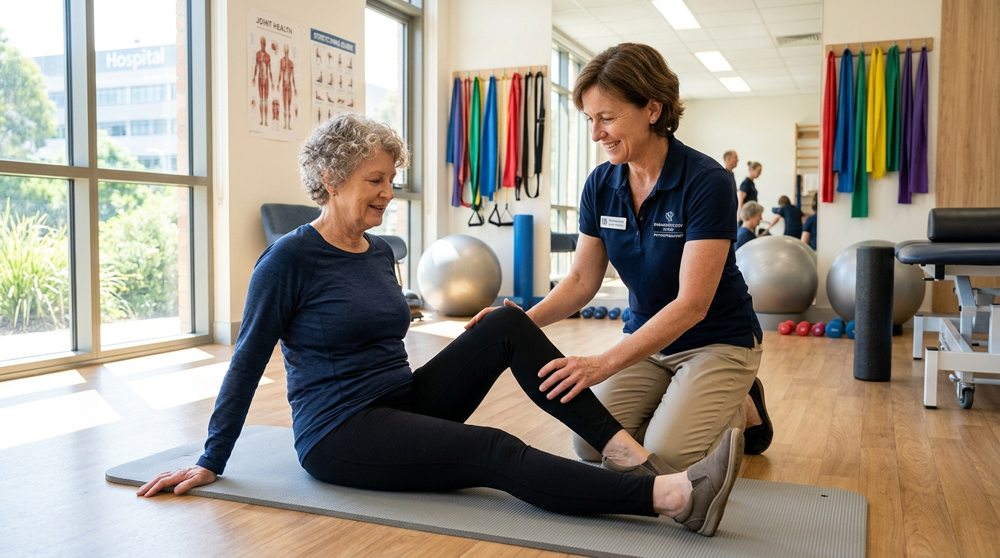

When a joint is actively throbbing, swollen, and stiff, your natural biological impulse is complete immobilization. However, extended bed rest and joint bracing can lead to rapid periarticular muscle atrophy, capsular contractures, and even greater stiffness. The clinical key is knowing the vital distinction between protective movement and tissue-damaging strain.
1. The "Hot Joint" Rule: When to Rest vs. When to Move
Before starting any physical routine, assess the inflammatory status of the joint:
- The "Hot" Joint (Red, warm to touch, visibly tense effusion): Absolute prohibition on heavy resistance, plyometrics, or deep range-of-motion stretching. Focus exclusively on gentle active-assisted range of motion (AAROM) within pain-free boundaries once or twice daily to circulate synovial fluid.
- The "Warm/Cool" Stiff Joint (Subacute stiffness without severe warmth): Ideal for progressive isometric stabilization, aquatic therapy, and low-impact stationary cycling.
2. The Power of Isometric Contraction
Isometric exercises allow you to contract surrounding muscle groups firmly without changing joint angle or grinding cartilage surfaces.
- Quadriceps sets for the knee: Sit with your leg extended straight on a mat or bed. Tighten the thigh muscle to press the back of your knee gently into the surface. Hold for 6 seconds, breathe naturally, and release. Repeat 8–10 times.
- Wall presses for the shoulder: Stand near a wall, bend your elbow to 90 degrees, and press your fist gently into a towel against the wall without moving the shoulder joint.
3. Hydrotherapy: The 80% Gravity Unloader
Warm water exercise (32°C–34°C / 90°F–93°F) is one of the most effective therapeutic environments in rheumatology:
- Buoyancy: Immersion to chest level reduces compressive skeletal loading by roughly 80%, allowing pain-free walking and hip mobility.
- Hydrostatic pressure: Assists in resolving dependent soft-tissue edema and joint effusion in the ankles and lower legs.
4. The Golden "2-Hour Rule"
How do you know if you did too much? Use the 2-Hour Post-Exercise Rule: Mild discomfort during gentle exercise is acceptable. However, if your joint pain or stiffness is significantly worse two hours after finishing compared to when you started—or persists intensely into the next morning—you exceeded current joint capacity. Reduce resistance, duration, or repetitions by 30% for your subsequent session.
About Dr. Diego Ramos
Dr. Diego Ramos is a consultant physician specializing in non-surgical musculoskeletal medicine and functional rehabilitation. He oversees RheumaCare's customized joint physical therapy and mobility pathways.